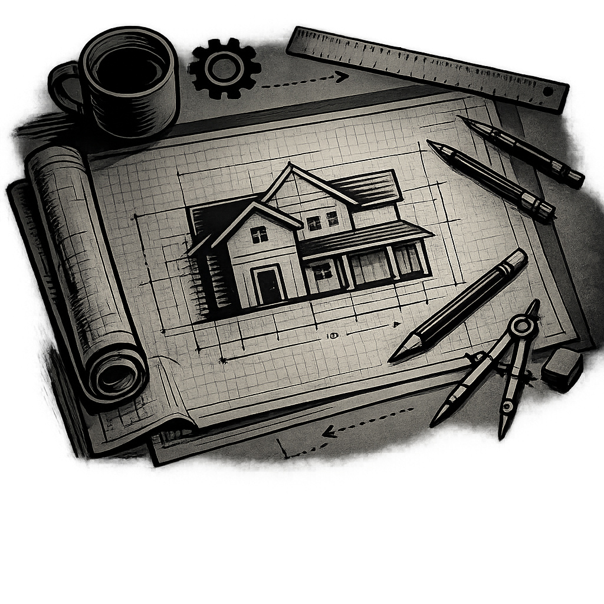
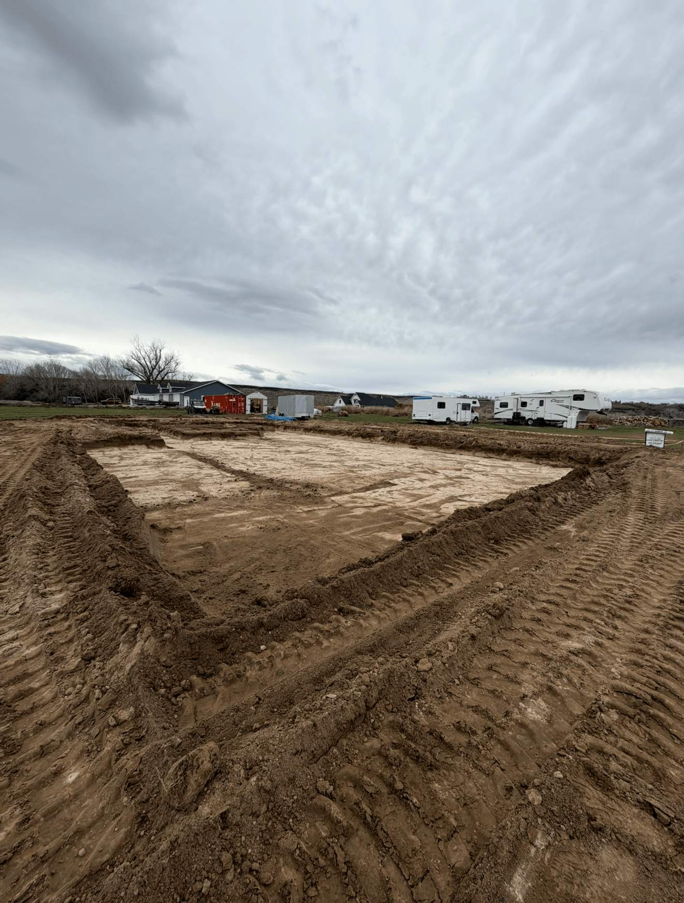
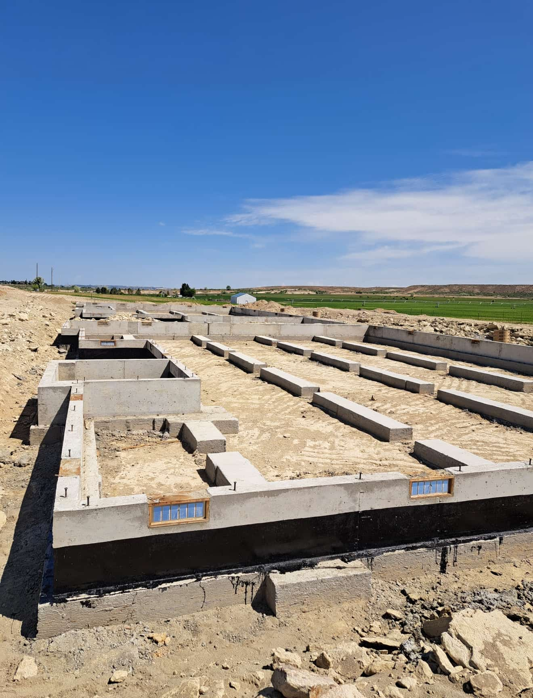
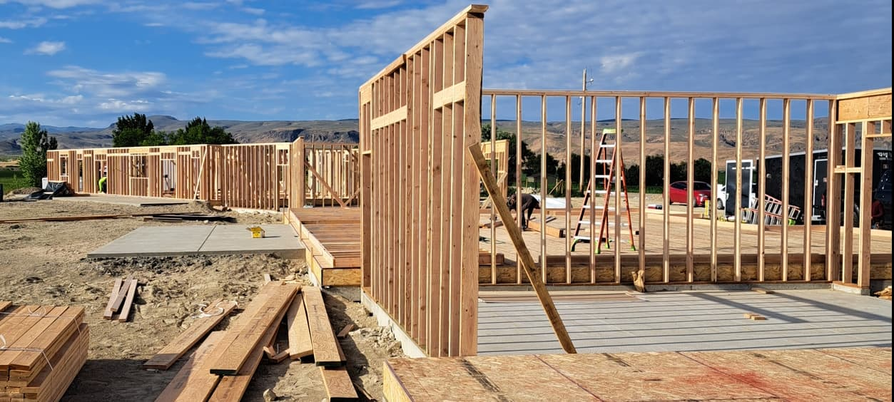
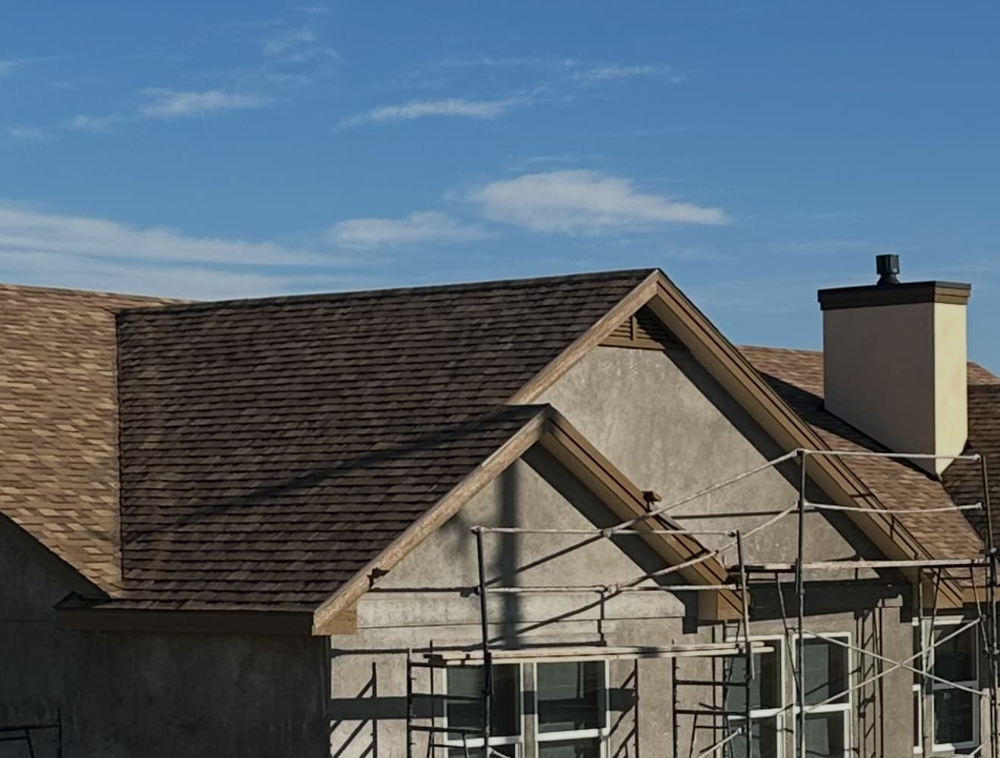
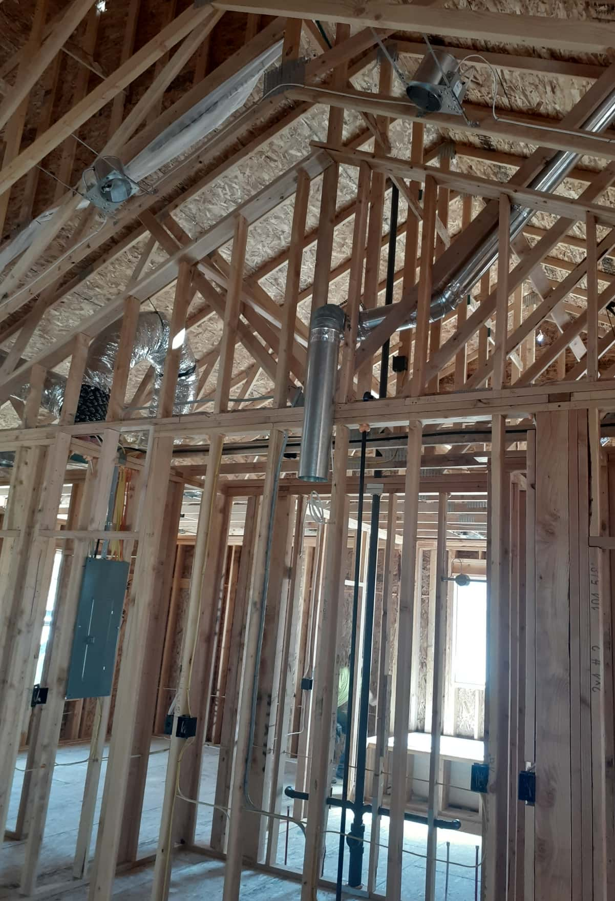
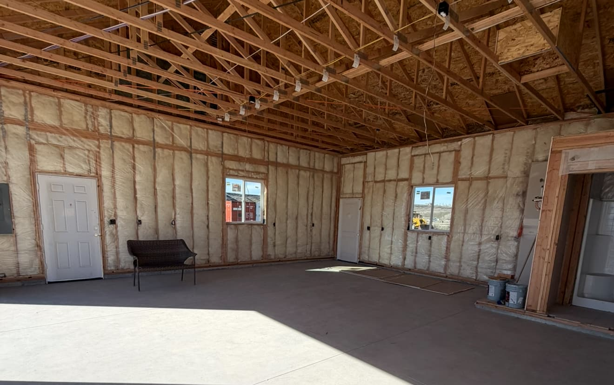
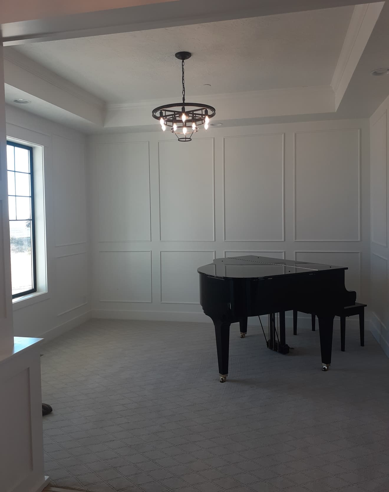
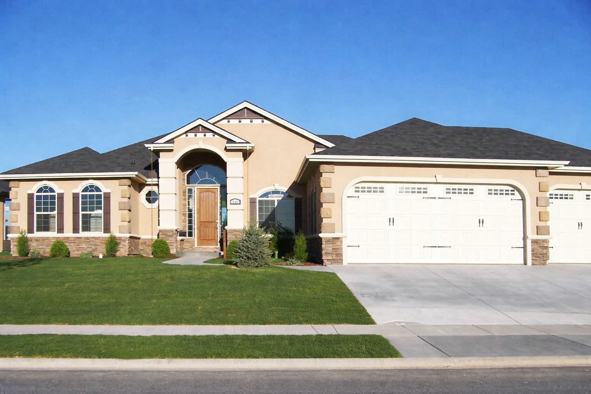

Stucki Homes
Stucki
Homes
Helping you build a home you’re proud of — from planning and prep to the final details.
Get StartedAbout Stucki Homes
Hi, I’m Troy Stucki, and I’ve been building homes since 2002.
I started my work in Utah, and in 2006 I brought my experience to Idaho,
where I’ve continued doing what I love—building homes from the ground up
for families in the local community. Over the years, I’ve had the
opportunity to complete 40+ homes, each one built with care, precision,
and strong attention to detail. For me, this isn’t just construction—it’s
about creating something lasting. A home is one of the biggest investments
you’ll ever make, and I take that seriously in every phase of the build.
Our Home Building Process
Building a home from the ground up takes planning, communication, and craftsmanship at every stage. From the very first conversation to the final walkthrough, each step matters. Our goal is to make the process clear, organized, and built around quality from start to finish.
Consultation & Vision
Every build starts with a conversation. We take time to understand your goals, your style, your needs, and what you want your future home to feel like. This first step helps shape the entire project.
Blueprints & Design Planning

Once the vision is clear, the planning begins. Layouts, dimensions, structural details, and design elements are reviewed so the home is planned with purpose before construction ever begins.
Site Preparation

Before the home can go up, the lot has to be properly prepared. This stage includes clearing, leveling, and getting the site ready for a solid start. Good preparation helps everything that follows.
Foundation

The foundation is one of the most important parts of the entire build. It supports everything above it, so this stage is handled with care, precision, and a strong focus on long-term durability.
Framing

Framing is where the home begins to take shape. Walls go up, rooms become visible, and the overall structure starts to feel real. This step brings the design from paper into a physical space.
Roofing & Exterior Shell

Once the frame is in place, the home is enclosed with roofing, sheathing, windows, and exterior materials. This protects the structure and prepares it for the next phases of the build.
Plumbing, Electrical & HVAC

Behind the walls, the essential systems are installed that make the home functional and comfortable. These systems are a major part of the build and are carefully placed before interior finishes begin.
Insulation & Drywall

After the major systems are in place, the home begins to feel more complete. Insulation helps with energy efficiency and comfort, while drywall starts shaping the clean interior look of each room.
Interior Finish Work

This is where the details begin to stand out. Flooring, trim, cabinetry, paint, fixtures, and custom features all come together to give the home its final character and style.
Final Touches & Walkthrough

Before the project is complete, the home is reviewed carefully to make sure everything is finished to the standard it should be. The final walkthrough is about quality, detail, and delivering a home you can feel proud of.
Lets get you into your new home
Testimonials
What Our Clients Are Saying
Real feedback from happy customers. Google reviews will be loaded here once connected.